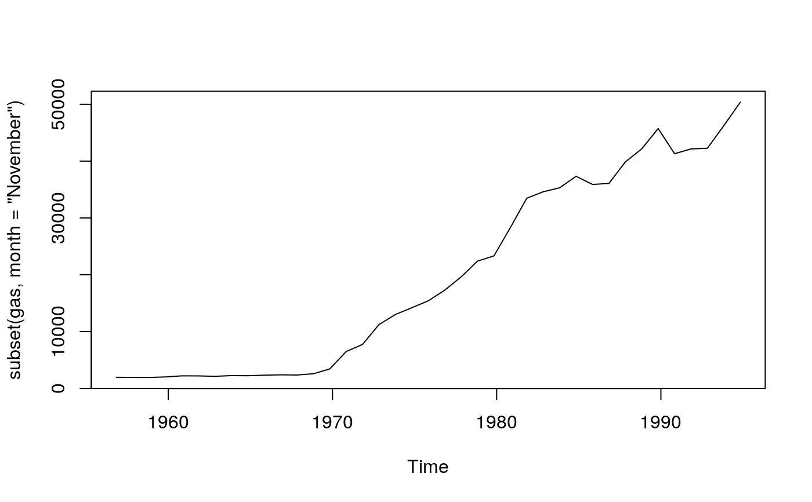

R/subset.R
Various types of subsetting of a time series. Allows subsetting by index
values (unlike window). Also allows extraction of the
values of a specific season or subset of seasons in each year. For example,
to extract all values for the month of May from a time series.
# S3 method for ts subset(x, subset = NULL, month = NULL, quarter = NULL, season = NULL, start = NULL, end = NULL, ...) # S3 method for msts subset(x, subset = NULL, start = NULL, end = NULL, ...)
| x | a univariate time series to be subsetted |
|---|---|
| subset | optional logical expression indicating elements to keep;
missing values are taken as false. |
| month | Numeric or character vector of months to retain. Partial matching on month names used. |
| quarter | Numeric or character vector of quarters to retain. |
| season | Numeric vector of seasons to retain. |
| start | Index of start of contiguous subset. |
| end | Index of end of contiguous subset. |
| ... | Other arguments, unused. |
If subset is used, a numeric vector is returned with no ts
attributes. If start and/or end are used, a ts object is
returned consisting of x[start:end], with the appropriate time series
attributes retained. Otherwise, a ts object is returned with frequency equal
to the length of month, quarter or season.
If character values for months are used, either upper or lower case may be
used, and partial unambiguous names are acceptable. Possible character
values for quarters are "Q1", "Q2", "Q3", and
"Q4".
plot(subset(gas,month="November"))subset(woolyrnq,quarter=3)#> Time Series: #> Start = 1965.5 #> End = 1994.5 #> Frequency = 1 #> [1] 6633 6730 6946 6915 7190 7105 6840 7819 7045 5540 5906 5505 5318 5466 5696 #> [16] 5341 5464 5129 5524 6080 6540 6339 6590 6077 5146 5127 5222 4954 5309 6396subset(USAccDeaths, start=49)#> Jan Feb Mar Apr May Jun Jul Aug Sep Oct Nov Dec #> 1977 7792 6957 7726 8106 8890 9299 10625 9302 8314 8850 8265 8796 #> 1978 7836 6892 7791 8192 9115 9434 10484 9827 9110 9070 8633 9240